時間管理
單位換算
光學十字
稜鏡轉換
弧度計
QR／條碼
匯率轉換
摩斯電碼
轉二進制
↻
時間管理工具
何時出發
何時到達
開始時間
目標時間
新增行程
計算時間
摩斯電碼翻譯器
英文 / 文字輸入
0 字元
⇅ 交換
摩斯碼輸入（用 . - 和 / 或空白分隔）
0 符號
複製文字
複製摩斯
清除
速度
20
音頻
600 Hz
字距
1.00×
音量
0.30
播放電碼
停止播放
二進制轉換器
十進制輸入
⇅ 交換
二進制輸入
複製十進制
複製二進制
清除
匯率轉換器
金額
原幣別
目標幣別
轉換
複製結果
清除
資料時間：--/--/-- --:--
QR／條碼產生器
模式
QR Code
條碼 (CODE128)
文字／網址
尺寸 (px)
前景色
背景色
上傳 Logo
生成
下載 PNG
下載 JPG
弧度計：由弧度計讀值 + 成鏡度數 → 求折射率
 
弧度計校正折射率 n
clock
前表面弧度計讀值 F
1c
(D)
後表面弧度計讀值 F
2c
(D)
已知鏡片成鏡度數 F (D)
執行計算
清除數據
符號慣例—凸面正、凹面負；採薄透鏡近似。
折射率
—
前表面真實度數 F
1
(D)
—
後表面真實度數 F
2
(D)
—
模式 A｜由鏡片度數 → 求弧度計讀值
弧度計校正折射率 n
clock
該表面真實度數 F
true
(D)
鏡片實際折射率 n
執行換算
清除數據
公式：F
c
= (n
clock
− 1) · F
true
/ (n − 1)
鏡片弧度（弧度計讀值）F
c
(D)
—
模式 B｜由弧度計讀值 → 求鏡片度數
弧度計校正折射率 n
clock
弧度計讀值 F
c
(D)
鏡片實際折射率 n
執行換算
清除數據
公式：F
true
= F
c
· (n − 1) / (n
clock
− 1)
鏡片該表面真實度數 F
true
(D)
—
單位換算
類型
視力
近距視力
RK值
距離
重量
容積
面積
溫度
角度
時間
鞋碼
從
到
數值
轉換
清除
公式/常數速查
主類別
子項目
光學十字轉換器（ 規則性散光 ）
正/負柱鏡表示
DS /
DC x
正/負柱鏡表示
DS /
DC x
子午線表示
D @
∕
D @
光學十字
調整大小
60%
隱形眼鏡轉換
頂點距(VD)
mm
值捨入：
0.25 D
0.50 D
1.00 D
散光隱眼處方
無散光（等價球面）
環曲面表示法
設定球弧
球弧設定於
前表面
後表面
基弧／正交弧：絕對值較小者為基弧
環曲面表示 → 正/負柱鏡表示
形式
正散形式（前表散光）
負散形式（後表散光）
清除
DC×
／
DC×
DS
負柱鏡形式：
正柱鏡形式：
稜鏡換算
稜鏡估量（Prentice Rule）
眼別
OD
OS
S
C
Axis
移心稜鏡量（指定光心位移 → 產生稜鏡）
垂直位移
方向
上(Up)
下(Down)
距離
mm
水平位移
方向
顳(Temporal)
鼻(Nasal)
距離
mm
計算稜鏡
移心稜鏡量（指定稜鏡 → 所需光心位移）
垂直稜鏡
稜鏡量(△)
基底
BU
BD
水平稜鏡
稜鏡量(△)
基底
BO
BI
計算位移
稜鏡合成 / 分解（V/H 轉換 360°表示）
水平/垂直 → 角度
眼別
OD
OS
水平量(△)
水平基底
BI
BO
垂直量(△)
垂直基底
BU
BD
合成稜鏡
角度 → 水平/垂直
眼別
OD
OS
稜鏡量(△)
角度(°)
0~360°表示法
0~90°(半規)
分解稜鏡
向量：0°→、90°↑、180°←、270°↓